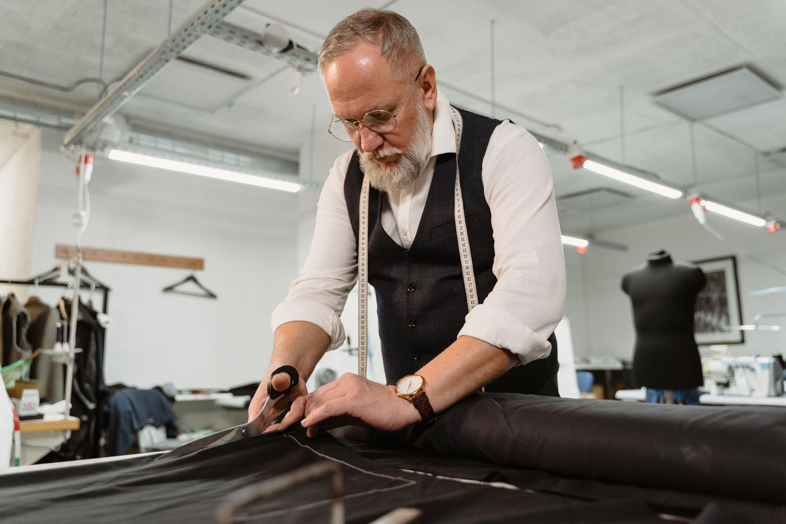

Ladies’ tailoring
Clothing that feels like you. Visit us to discuss your garments and tailoring requirements.
Discuss your garmentTAILORING & ALTERATIONS · SALFORD
Ladies’ and Gents’ Tailoring & Alterations
Ladies’ and gents’ tailoring and alterations in Salford, alongside traditional Eritrean and Ethiopian household and coffee items.

THE DETAILS MAKE THE DIFFERENCE01 / TAILORING & ALTERATIONS
A little attention. A different feeling.From a garment you love to something that needs a little attention, bring it along. Let’s talk about what you have in mind.
Clothing that feels like you. Visit us to discuss your garments and tailoring requirements.
Discuss your garmentConsidered attention to your wardrobe. Call or stop by to talk through your tailoring needs.
Let’s talk tailoringA change can make all the difference. Bring your garment in and discuss the alterations you’re looking for.
Enquire about alterations02 / TRADITIONAL ERITREAN & ETHIOPIAN ITEMS
FAMILIAR OBJECTS. MEANINGFUL TRADITIONS.
Alongside our tailoring, discover traditional Eritrean and Ethiopian household and coffee items for your home.
Ask about our selectionExplore coffee items connected to Eritrean and Ethiopian traditions.
Traditional coffee pots. Contact the shop to find out what’s available.
Traditional household items. Ask us about the current selection.
Items are sold in the shop. Please call for current availability and our wider selection.
A WARM WELCOME TO ADAM TAILORS
Clothes are personal. So are the objects we choose for our homes. At Adam Tailors in Salford, ladies’ and gents’ tailoring and alterations sit alongside traditional Eritrean and Ethiopian household items. Visit us to discuss your clothes or explore the selection in the shop.
آدم للخياطة03 / FIND US IN SALFORD
Have a garment in mind or a question about our traditional items? Give us a call, or come and see us.
+44 7898 535367OUR SHOP
17A Bury New RoadPlease call to confirm opening hours before visiting.